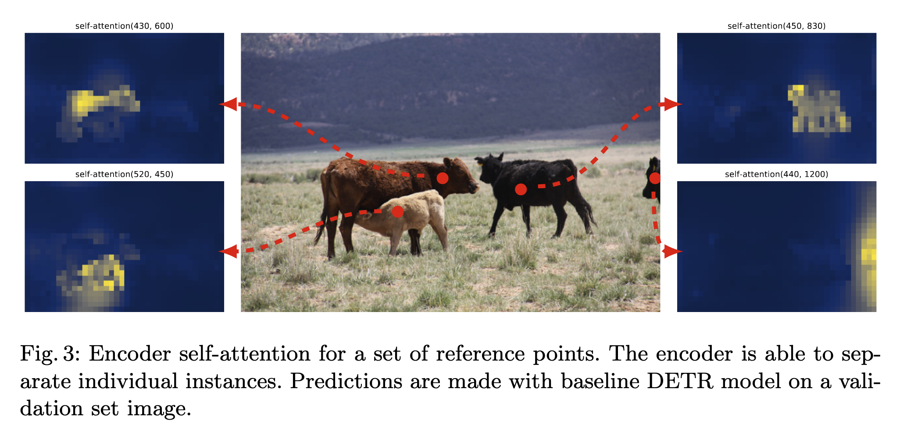
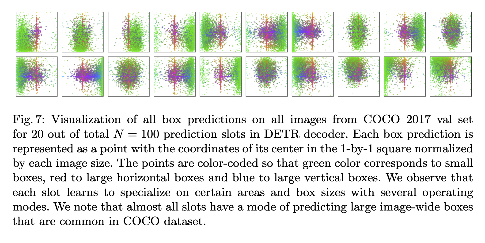
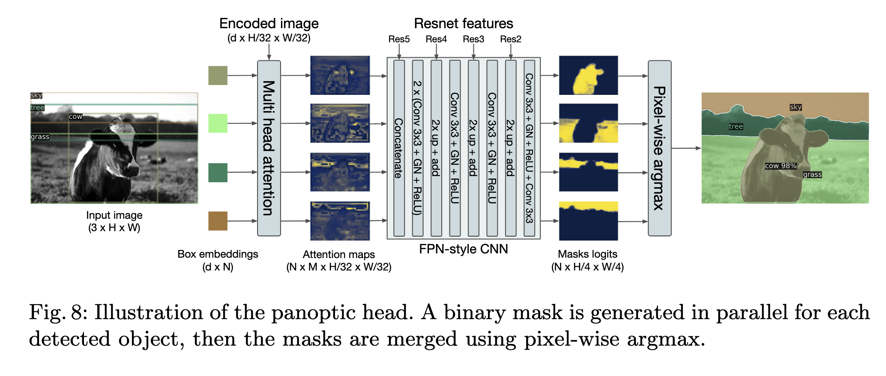

https://arxiv.org/abs/2005.12872
Traditional object detection methods usually require manual post-processing steps to generate final bounding boxes. For example, non-maximum suppression (NMS) is commonly used to remove duplicate boxes.
Furthermore, traditional methods often rely on an initial guess, such as anchors, a grid of possible object centers, or region proposals.
This paper introduces a transformer encoder-decoder architecture that directly predicts boxes and classes in an end-to-end fashion.
To predict a set of objects without duplicates, the model needs a way for different predictions to communicate. This is achieved through the attention mechanism. In previous methods, predictions could not communicate with each other, which is why NMS was necessary to eliminate duplicates.
Method
The core goals of DETR are:
- A set prediction loss that forces unique matching between predicted and ground truth boxes.
- A non-autoregressive approach that predicts all boxes in a single pass.
Loss Function
To achieve single-pass prediction, the decoder takes N query tokens as input. N is set to be significantly larger than the typical number of objects in an image. Ground truth data is padded with a ∅ (no object) class so that the number of objects equals N.
The Hungarian algorithm is used to find the global minimum loss pairing between the N predictions and the N ground truth objects. This matching process considers both the class label and the box coordinates:
Lmatch(yi,y^σ(i))=−1{ci=∅}p^σ(i)(ci)+1{ci=∅}Lbox(bi,b^σ(i))
- When using the Hungarian algorithm, the class probability is not logged. This ensures the magnitude is comparable to the box loss.
- In the final loss used for backpropagation, if the ground truth class is ∅, the classification loss is down-weighted by a factor of 10 to handle class imbalance.
- For the box loss, simple L1 loss is problematic because large and small boxes have different loss scales even with the same relative error. To fix this, a linear combination of L1 loss and Generalized IoU (GIoU) loss is used.
Architecture
- CNN Backbone: Extracts feature maps from the input image.
- Transformer Encoder-Decoder: Processes the features. The decoder’s inputs are N learned positional embeddings, also known as object queries.
- FFN: A 3-layer feed-forward network predicts the class (including the “empty” class) and the box coordinates (normalized center coordinates, height, and width).
Auxiliary Decoding Losses
Prediction FFNs and Hungarian loss are applied after every decoder layer. All these prediction FFNs share the same weights.
Experiment
The model was trained and tested on the COCO 2017 dataset:
- 118k training images and 5k validation images.
- COCO images average 7 objects per image, but can have up to 63.
DETR requires a very long training time. Compared to Faster R-CNN, DETR shows a clear advantage in detecting large objects but performs worse on small objects.
Ablation Study
- Using only IoU loss is sufficient to get results close to the baseline, but using only L1 loss leads to a significant drop in performance.

- Encoder attention map visualizations show that the encoder learns basic object segmentation.
Why NMS is not needed:
- Adding NMS improves results for the first decoder layer, but the improvement decreases for subsequent layers. By the final layer, adding NMS actually hurts performance.
- Visualizations show that decoder attention usually focuses on the extremities (limbs or edges) of objects. This suggests that once the encoder has separated the instances, the decoder only needs to look at local features to identify the class and boundaries.

Query Analysis:
- For small boxes, specific queries have regional preferences.
- For large boxes, almost every query is capable of taking responsibility for the prediction.
The model generalizes well to rare scenarios. For example, even if the training set lacks images with many instances of the same object (like 13 giraffes), the model can still handle them at test time.
Panoptic Segmentation
DETR can be easily extended to panoptic segmentation.
The box embeddings (representing objects) and the encoder output are passed to a multi-head attention layer. This generates low-resolution attention maps, which are then upsampled to the original image size using a CNN. For every pixel, the model generates a binary mask for each object class. Finally, a pixel-wise argmax is used to merge these into the final mask.
